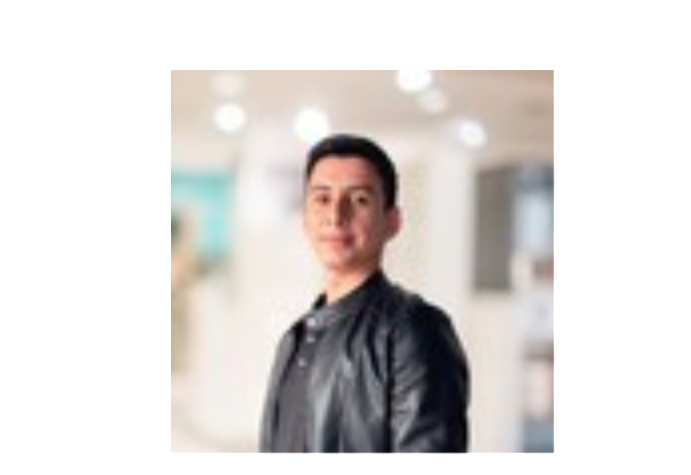

Raul Contreras Miranda

Descripcion
Programador aficionado especializandose en full-stack development
Educacion
Carrera en Ingenieria Electromecanica
Experiencias Laborales
- Agente de live chat para techstyle
- Interprete bilingüe
- Auxiliar de Almacen
- Instalador en proyectos electricos (paneles solares, motores y luminarias)
- Especialista de certificacion en pirometria
- Tecnico de laboratorio, materiales preimpregnados (industria aeroespacial)
- Practicante de ingenieria (area de validacion y certificacion de diseños)
Skills
Ingles conversacional
elaboracion de scripts en lenguaje Autohotkey
Diseño mecánico (básico)
Razones para estudiar Desarrollo Full-Stack
Tengo la ambicion de colocarme en una empresa americana o europea de manera remota